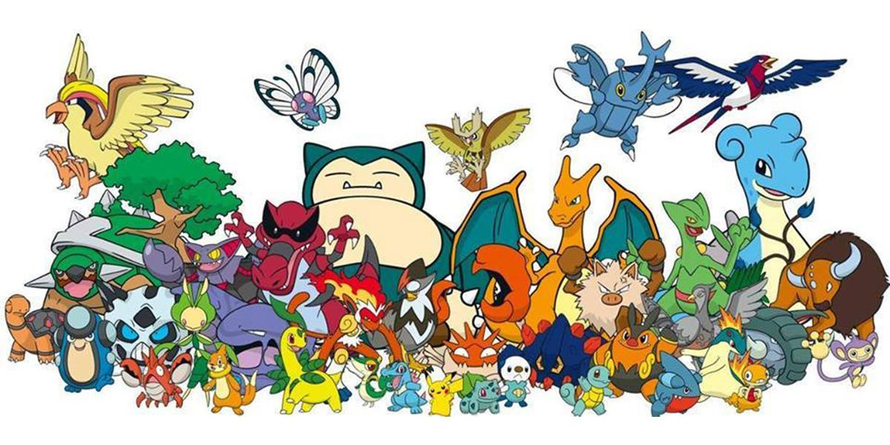
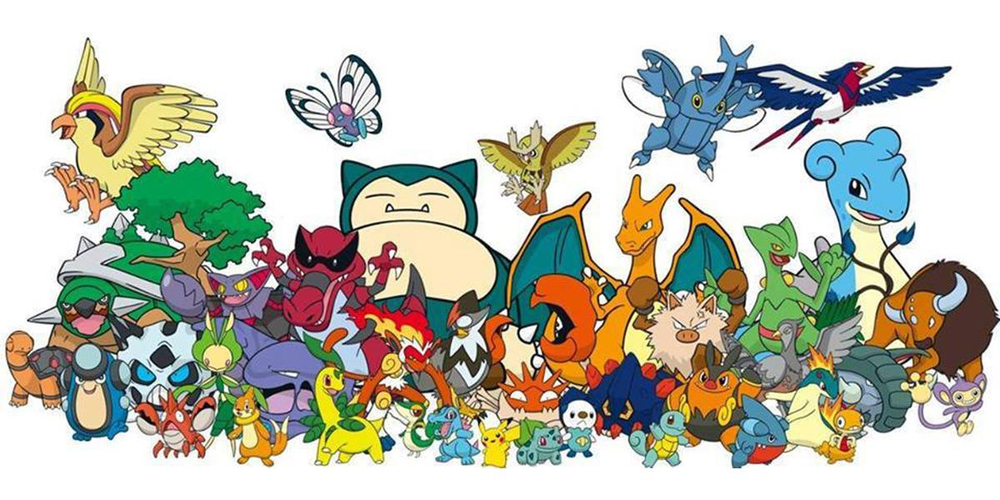
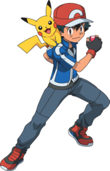
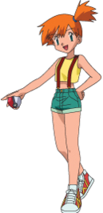

Tajiri first thought of Pokémon around 1989 or 1990, when the Game Boy was first released. The concept of the Pokémon universe, in both the video games and the general fictional world of Pokémon, stems from the hobby of insect collecting, a popular pastime which Pokémon executive director Satoshi Tajiri enjoyed as a child.[21] Players are designated as Pokémon Trainers and have two general goals: complete the Pokédex by collecting all of the available Pokémon species found in the fictional region where a game takes place, and train a team of powerful Pokémon from those they have caught to compete against teams owned by other Trainers and eventually win the fictional Pokémon League. These themes of collecting, training, and battling are present in almost every version of the Pokémon franchise, including the video games, the anime and manga series, and the Pokémon Trading Card Game.
In most incarnations of the fictional Pokémon universe, a Trainer who encounters a wild Pokémon is able to capture that Pokémon by throwing a specially designed, mass-producible spherical tool called a Poké Ball at it. If the Pokémon is unable to escape the confines of the Poké Ball, it is officially considered to be under the ownership of that Trainer. Afterwards, it will obey whatever its new master commands, unless the Trainer demonstrates such a lack of experience that the Pokémon would rather act on its own accord. Trainers can send out any of their Pokémon to wage non-lethal battles against other Pokémon; if the opposing Pokémon is wild, the Trainer can capture that Pokémon with a Poké Ball, increasing his or her collection of creatures. Pokémon already owned by other Trainers cannot be captured, except under special circumstances in certain games. If a Pokémon fully defeats an opponent in battle so that the opponent is knocked out ("faints"), the winning Pokémon gains experience points and may level up. When leveling up, the Pokémon's statistics ("stats") of battling aptitude increase, such as Attack and Speed. From time to time the Pokémon may also learn new moves, which are techniques used in battle. In addition, many species of Pokémon can undergo a form of metamorphosis and transform into a similar but stronger species of Pokémon, a process called evolution.
In the main series, each game's single-player mode requires the Trainer to raise a team of Pokémon to defeat many non-player character (NPC) Trainers and their Pokémon. Each game lays out a somewhat linear path through a specific region of the Pokémon world for the Trainer to journey through, completing events and battling opponents along the way (including foiling the plans of a Team of Pokémon Trainers who serve as antagonists to the player). Each game features eight especially powerful Trainers, referred to as Gym Leaders, that the Trainer must defeat in order to progress. As a reward, the Trainer receives a Gym Badge, and once all eight badges are collected, that Trainer is eligible to challenge the region's Pokémon League, where four immensely talented trainers (referred to collectively as the "Elite Four") challenge the Trainer to four Pokémon battles in succession. If the trainer can overcome this gauntlet, he or she must then challenge the Regional Champion, the master Trainer who had previously defeated the Elite Four. Any Trainer who wins this last battle becomes the new champion.
Main Characters
Ash Ketchum
Named after creator Satoshi Tajiri,[1] Satoshi, whose name can be taken to mean "wisdom" or "reason", was designed by Ken Sugimori and Atsuko Nishida,[2] and intended to represent how Tajiri was as a child, obsessed with collecting creatures. During localization of both for North American audiences, the character's name was changed in the anime to "Ash Ketchum", the first name taken from one of the possible default names players could select for the player character in Pokémon Red and Blue, and the surname tying into the former tagline (and as of Pokémon XY revived) for the series, "Gotta catch 'em all!"[3].Tajiri noted in an interview that between Japanese and American reactions to the series, Japanese consumers focused on the character Pikachu, while Americans purchased more items featuring Ash and Pikachu, his Pokémon, together. He stated that he felt the character represented the concept of the franchise, the human aspect, and was a necessity.[4] In both the games and anime, the character was given a rival named Gary (Shigeru in the Japanese version, after Tajiri's idol/mentor, Nintendo legend Shigeru Miyamoto). In an interview Tajiri noted the contrast between the characters' relationship in the games and anime; while in the games they were rivals, in the anime, Shigeru represented Satoshi's master. When asked if either Satoshi would equal or surpass Shigeru, Tajiri replied "No! Never!"[1] Ash's character design was initially overseen by Sayuri Ichishi, replaced by Toshiya Yamada during the Diamond and Pearl storyline arc. Ash will receive a new design for the upcoming Sun and Moon anime series which is set to aired in Japan in November 2016.[5]
Misty
In the early episodes, Misty is depicted as having a wicked temper, stubborn temperament, and little patience. As the series progresses, however, she gradually shows herself to be kind and sensible. Misty becomes the parental guardian of Togepi, caring for it throughout the series.[6] Misty constantly reins in Brock when he becomes enamored with pretty girls, often pulling him away by the ear. She is also terrified of most Bug-type Pokémon. Misty aims to be a world-class Water-type Pokémon trainer despite her sisters' ridicule. Misty is also an orphan, with her parents having abandoned her and her sisters at an early age.[7]The Misty that appears in the Electric Tale of Pikachu manga series, which is loosely based on the anime, is similar to the Misty in the anime, while the Misty in Pokémon Adventures is similar to the Misty in the video games. She appears throughout Electric Tale of Pikachu, traveling on occasion with Ash. In Pokémon Adventures, Misty is still a stubborn tomboy who trains Water Pokémon and has three siblings, Daisy, Lily and Violet, who are not mentioned. When Red, the protagonist of the manga, first meets her, she is trying to recapture her Gyarados, which has been brainwashed by Team Rocket. They decide to team up and confront Team Rocket. The next morning, after spending the night resting in Misty's mansion, Misty leads Red to her Gym and reveals herself to be the Gym Leader. They have a battle, and though Misty quickly gained the upper hand and easily defeated Red. However, she is worried that if they do not prepare themselves, Team Rocket will defeat them easily. Red decides that he might actually need training, and agrees to train. At that point, they become close friends.
In Pokémon Pocket Monsters, Red, the protagonist of the series, is seeking a Moon Stone along with his Pikachu and his Clefairy (one that speaks human language). When they meet Misty, Clefairy notices that she is wearing a Moon Stone as a necklace. Misty declares that they battle her if they wish to have it. While the Clefairy is initially pumped up to battle, he quickly changes his mind when he sees that his opponent is a massive Blastoise. After a while, the battle is won when Clefairy sucks up all the water in a nearby river and releases the water onto Misty's Pokémon, sending it flying into the sky. Just when Misty is about to reward Red's group with the prize they sought, the stone is stolen.
Brock
 Brock is considered the most mature, wise, and level-headed of the main characters. He often acts as an older brother and caretaker to the other characters and a voice of reason in disputes. He will usually place others before him and will help and support his friends even against his better judgment or at his own expense. While he is not shown to battle often, he can understand the situations and strategies in any Pokémon battle, and often explains them to the other characters (and to the viewer), probably because he was once a Gym Leader. Brock always carries books and maps with him, and thus is usually the character who knows where the group is headed and what they can do when they get there, though in Advanced Generation, this role was mostly taken over by the Pokénav. He also carries a lot of other supplies, such as potions and cookware, as well as practical tools like a brush and pocket knife. He is a domestic, and grooms not only his Pokémon but also those of his friends with whom he travels. He handles all the cooking and cleaning for his friends.
Brock is the tallest of main characters, and the closest to looking like an adult. Next to actual adult characters, however, it is clear that he is still a teenager. Not counting temporary outfits, he has worn three different outfits over the span of the anime, all of which have had the colors orange, green, and brown, with blue shoes. His goals have played a passive role in his character's activity and development. Unlike other characters, who aspire to achieve and excel in competitive fields like Pokémon Training and Pokémon Contests, his aim to become a great Pokémon Breeder is a quiet one and thus does not get showcased frequently. His other goal is to find a girlfriend as seen when he tries to ask Nurse Joy or Officer Jenny out or any other pretty girl he sees. There is also a running gag in the anime where Brock comes on too strong to a girl he finds pretty and Misty will pull his ear, dragging Brock away and making a comment in the process. Brock's most notable feature is that his eyes naturally appear closed. He also has tan skin, notably darker than the skin of any other major character in the series.
In an 2006 interview with K-Zone Australia, voice actor Eric Stuart revealed that Brock's last name is Harrison.[1]
Brock is considered the most mature, wise, and level-headed of the main characters. He often acts as an older brother and caretaker to the other characters and a voice of reason in disputes. He will usually place others before him and will help and support his friends even against his better judgment or at his own expense. While he is not shown to battle often, he can understand the situations and strategies in any Pokémon battle, and often explains them to the other characters (and to the viewer), probably because he was once a Gym Leader. Brock always carries books and maps with him, and thus is usually the character who knows where the group is headed and what they can do when they get there, though in Advanced Generation, this role was mostly taken over by the Pokénav. He also carries a lot of other supplies, such as potions and cookware, as well as practical tools like a brush and pocket knife. He is a domestic, and grooms not only his Pokémon but also those of his friends with whom he travels. He handles all the cooking and cleaning for his friends.
Brock is the tallest of main characters, and the closest to looking like an adult. Next to actual adult characters, however, it is clear that he is still a teenager. Not counting temporary outfits, he has worn three different outfits over the span of the anime, all of which have had the colors orange, green, and brown, with blue shoes. His goals have played a passive role in his character's activity and development. Unlike other characters, who aspire to achieve and excel in competitive fields like Pokémon Training and Pokémon Contests, his aim to become a great Pokémon Breeder is a quiet one and thus does not get showcased frequently. His other goal is to find a girlfriend as seen when he tries to ask Nurse Joy or Officer Jenny out or any other pretty girl he sees. There is also a running gag in the anime where Brock comes on too strong to a girl he finds pretty and Misty will pull his ear, dragging Brock away and making a comment in the process. Brock's most notable feature is that his eyes naturally appear closed. He also has tan skin, notably darker than the skin of any other major character in the series.
In an 2006 interview with K-Zone Australia, voice actor Eric Stuart revealed that Brock's last name is Harrison.[1]
Lets catch em all!!
Pikachuuu
Pikachu (Japanese: ピカチュウ Hepburn: Pikachū?) are a species of Pokémon, fictional creatures that appear in an assortment of video games, animated television shows and movies, trading card games, and comic books licensed by The Pokémon Company, a Japanese corporation. The Pikachu design was conceived by Atsuko Nishida and finalized by Ken Sugimori. Pikachu first appeared in Pokémon Red and Green in Japan, and later in the first internationally released Pokémon video games, Pokémon Red and Blue, for the original Game Boy.
Like other species of Pokémon, Pikachu are often captured and groomed by humans to fight other Pokémon for sport. Pikachu are one of the most well-known varieties of Pokémon, largely because a Pikachu is a central character in the Pokémon anime series. Pikachu is regarded as a major character of the Pokémon franchise as well as its mascot, and has become an icon of Japanese pop culture in recent years.

Bulbasaur
Bulbasaur, known as Fushigidane (フシギダネ?) in Japan,[1] is a Pokémon species in Nintendo and Game Freak's Pokémon franchise. Designed by Ken Sugimori, their name is a combination of the words "bulb" and "dinosaur." First appearing in Pokémon Red and Green as a Starter Pokémon, they later appeared in subsequent sequels, spin-off games, related merchandise, and animated and printed adaptations of the franchise.
Known as the Seed Pokémon, Bulbasaur can survive for days solely on sunlight. It is a central character in the anime, being one of Ash's main Pokémon for the first season, and a different one later being obtained by May. It is featured in various manga, and is owned by protagonist Red in the Pokémon Adventures manga. Bulbasaur has been featured in myriad pieces of merchandise, including toys, key chains, and plush dolls.